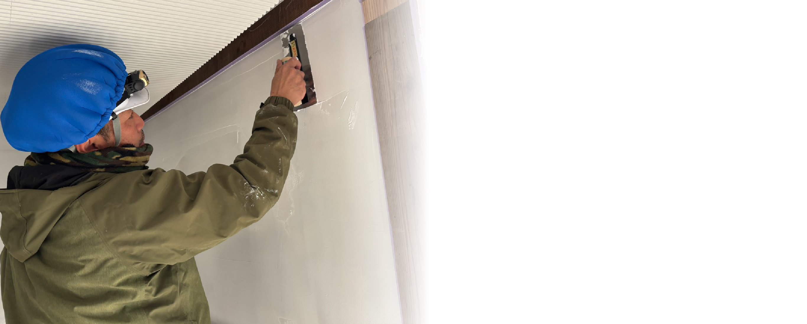
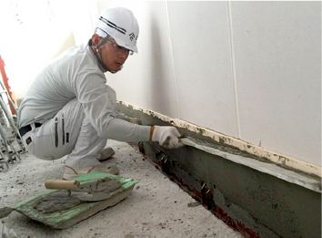
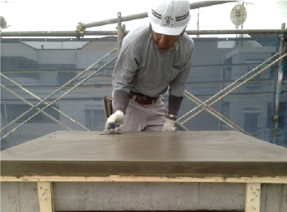
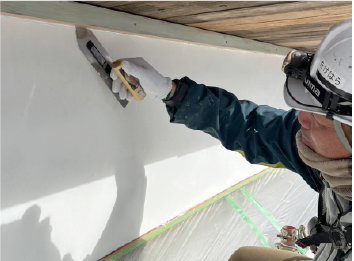
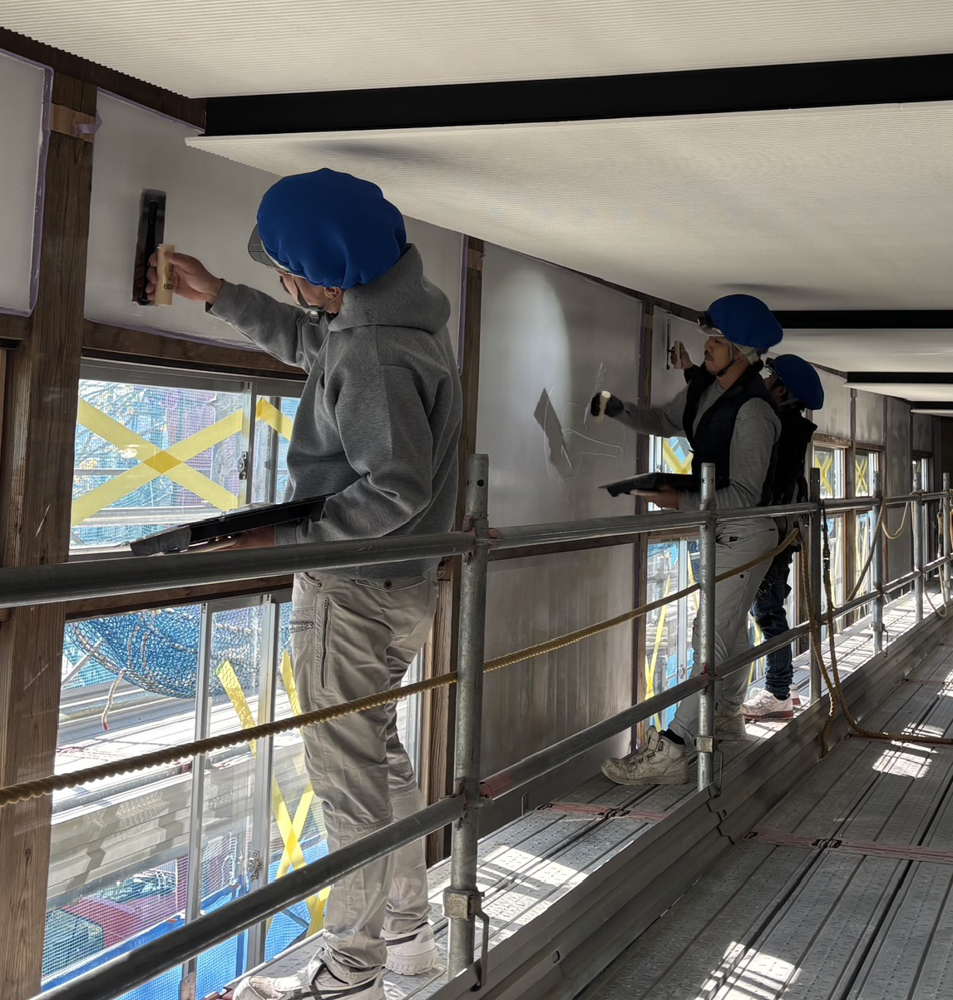
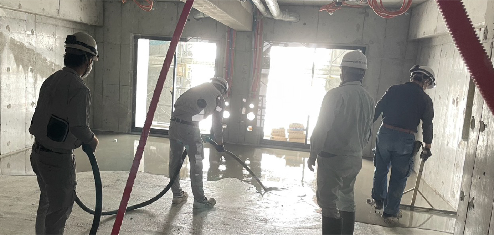
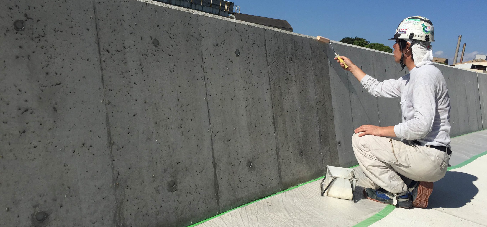
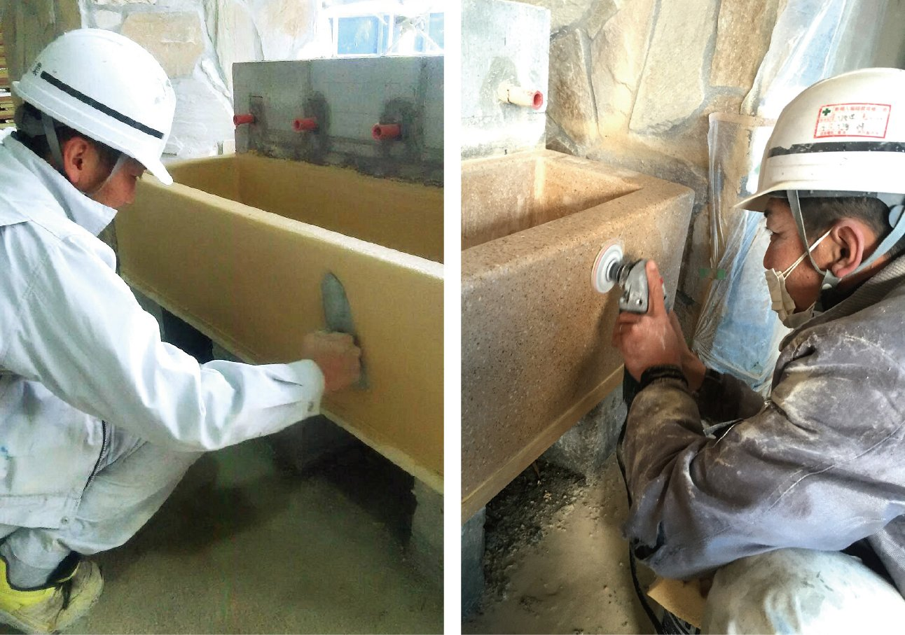

サービス内容
SERVICE

仕上げの技術で、
建物に価値を。
一般左官工事をはじめ
床 SL（セルフレベリング）工事
打ち放し補修工事
人造研ぎ出し工事など
幅広い仕上げ工事に対応しています。
豊富な経験と確かな技術で、
美しく高品質な空間づくりを支えます。
一般左官工事
左官は、土壁や砂壁、漆喰仕上げなどを仕上げる職人で、左官工事とは左官職が行う塗り工事のことです。 モルタル塗り、プラスター塗りなども左官が行います。左官による仕上げは他の工法と比べて割高かもしれませんが、 長持ちするためランニングコストの点では大変お得です。また、基本的に自然素材による工法ですので、 アレルギーの心配などもありません。竹原工業では様々な素材やメーカーの材料を使用した、左官工事を行っております。





床 SL（セルフレベリング）工事
セルフレベリングは流動性、耐久性に優れ、硬化速度が速いなどの数々の特性を有し、屋内のあらゆる床に使用できます。
当社はセルフレベリング工事の専門業者として、年間3万㎡の施工実績が在ります。施工前の墨出しから施工後の調整までを一貫して施工いたします。

打ち放し補修工事
竹原工業のコンクリート打ちっ放しは殆どの下地に施工が可能です。 コンクリート打ち放しは、建築物の仕上げの一種で、型枠を外した直後のむき出しのままの状態でコンクリート構造独特の力強さ・清潔感・素材感などが感じられる手法になります。

人造研ぎ出し工事
セメントに大理石などの砂利をまぜて研ぎ、自然天然石のように仕上げる昔ながらの工法です。セメントと石の種類と配合により様々な色調・模様が得られます。庁舎の重厚な受付や店舗のオシャレなカウンター、手洗い場、階段など、様々なご提案が可能です。
施工実績
WORKS
一つひとつの現場に、
確かな技術を。
大阪・関西エリアを中心に、さまざまな建物・現場で施工を行っています。
これまで培ってきた経験と技術を、一つひとつの現場に丁寧に積み重ねています。